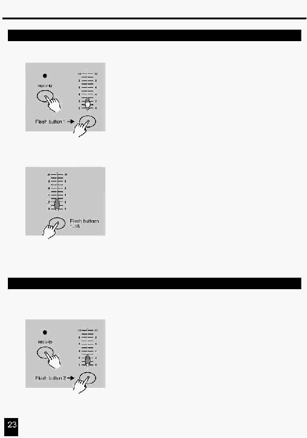

3. Робота з інтерфейсом MIDI
3.1 Установка вхідного каналу MIDI IN
1. Натисніть кнопку Flash 1 три рази, при цьому втримуючи
натиснутою кнопку Record, на цифровому дисплеї
прочитайте "CHI", що вказує на те, що можна робити
установку каналу MIDI IN .
Натисніть цю
кнопку три рази
2. Натисніть кнопку Flash з номером 1-16 для визначення
номера каналу MIDI IN (1-16), індикатор відповідного каналу
засвітиться вказуючи на те, що канал MIDI IN установлений.
3.2 Установка вихідного каналу MIDI OUT
1. Натисніть кнопку Flash 2 три рази, при цьому втримуючи
натиснутою кнопку Record, на цифровому дисплеї
прочитайте "CHО", що вказує на те, що можна робити
установку каналу MIDI OUT.
Натисніть цю
кнопку три рази